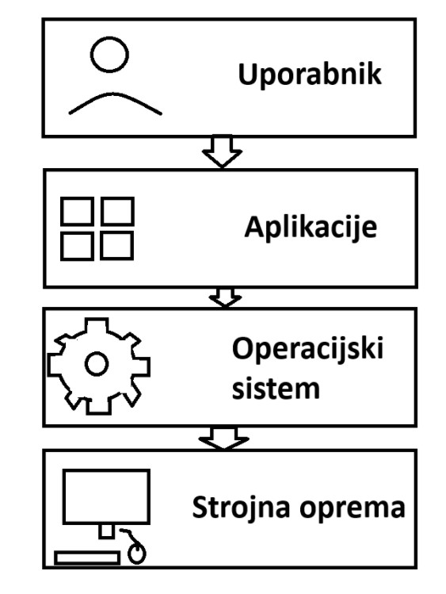

Kaj je operacijski sistem?
Operacijski sistem je sistemska programska oprema, ki upravlja strojne in programske vire računalnika. Predstavlja osnovo, na kateri delujejo vse druge aplikacije in uporabniški programi.
Njegov glavni namen je uporabniku omogočiti enostavno uporabo računalnika brez neposrednega upravljanja strojne opreme. Namesto da bi moral programer za vsako napravo posebej pisati ukaze za komunikacijo s procesorjem, pomnilnikom ali diskom, te naloge prevzame operacijski sistem.
Operacijski sistem zagotavlja:
- komunikacijo med uporabnikom in računalnikom,
- izvajanje programov,
- upravljanje pomnilnika,
- nadzor nad napravami,
- organizacijo datotek in map,
- varnost podatkov,
- povezovanje v omrežja.
Najpogosteje uporabljeni operacijski sistemi danes so:
- Microsoft Windows,
- Linux,
- macOS,
- Android,
- iOS.
Vsak od njih je prilagojen določenim vrstam naprav in potrebam uporabnikov.
